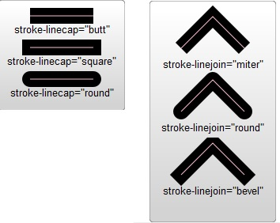

<svg width="140" height="30">
    <a xlink:href="https://developer.mozilla.org/en-US/docs/SVG" target="_blank">
        <rect height="30" width="120" y="0" x="0" rx="15" />
        <text fill="white" text-anchor="middle" y="21" x="60">SVG on MDN</text>
    </a>
</svg>

<svg width="50" viewBox="0 0 120 120">
    <circle cx="60" cy="60" r="50" />
</svg>

<svg width="500" height="160" viewBox="0 0 1000 300">
    <defs>
        <path id="MyPath" d="M 100 200 
             C 200 100 300   0 400 100
             C 500 200 600 300 700 200
             C 800 100 900 100 900 100" />
    </defs>
    <use xlink:href="#MyPath" fill="none" stroke="red" />
    <text font-family="Verdana" font-size="42.5">
        <textPath xlink:href="#MyPath">
            We go up, then we go down, then up again
        </textPath>
    </text>

    <rect x="1" y="1" width="998" height="298" fill="none" stroke="black" stroke-width="4" />
</svg>


<svg width="120" height="120" viewBox="0 0 120 120">
    <rect x="10" y="10" width="100" height="100" ry="15" rx="15" />
</svg>
<svg width="120" height="120" viewPort="0 0 120 120">
    <ellipse cx="60" cy="60" rx="50" ry="25" />
</svg>
<hr>2.
<svg viewBox="0 0 100 100" width="200" height="200">
    <clipPath id="myClip">
        <!--
            圆圈外的所有东西都会被裁剪掉，因此不可见。
          -->
        <circle cx="40" cy="35" r="15" />
    </clipPath>

    <!-- 作为引用元素（英文原文：for reference）的黑色心形 -->
    <path id="heart" d="M10,30 A20,20,0,0,1,50,30 A20,20,0,0,1,90,30 Q90,60,50,90 Q10,60,10,30 Z" />

    <!--
          和上述黑色心形形状相同的红色心形，剪切路径是上面定义的圆；
          红色心形只有在圆内的部分可见。
        -->
    <use clip-path="url(#myClip)" xlink:href="#heart" fill="red" />
</svg>

<svg viewBox="0 0 95 50" width="120" height="120">
    <g stroke="green" fill="white" stroke-width="5">
        <circle cx="25" cy="25" r="15" />
        <circle cx="40" cy="25" r="15" />
        <circle cx="55" cy="25" r="15" />
        <circle cx="70" cy="25" r="15" />
    </g>
</svg>

<svg>
    <!-- symbol definition  NEVER draw -->
    <symbol id="sym01" viewBox="0 0 150 110">
        <circle cx="50" cy="50" r="40" stroke-width="8" stroke="red" fill="red" />
        <circle cx="90" cy="60" r="40" stroke-width="8" stroke="green" fill="white" />
    </symbol>

    <!-- actual drawing by "use" element -->
    <use xlink:href="#sym01" x="0" y="0" width="100" height="50" />
    <use xlink:href="#sym01" x="0" y="50" width="75" height="38" />
    <use xlink:href="#sym01" x="0" y="100" width="50" height="25" />
</svg>

<!-- ****************path******************** -->
<svg width="190px" height="160px" version="1.1" xmlns="http://www.w3.org/2000/svg">
    <path d="M10 10 C 10 80, 60 80, 60 10" stroke="black" fill="transparent" />
    <path d="M10 80 C 40 10, 65 10, 95 80 C 125 150, 150 150, 180 80" stroke="black" fill="transparent" />

    <path d="M 10 80 
    C 40 10, 65 10, 95 80 
    S 150 150, 180 80" stroke="black" fill="transparent" />
</svg>

<svg width="190px" height="160px" version="1.1" xmlns="http://www.w3.org/2000/svg">
    <path d="M10 80 Q 95 10, 180 80" stroke="black" fill="transparent" />
    <path d="M10 80 
    Q 52.5 10, 95 80 
    T 180 80" stroke="black" fill="transparent" />
</svg>


<!-- 弧线： -->
<svg width="325px" height="325px" version="1.1" xmlns="http://www.w3.org/2000/svg">
    <path d="M80 230
             A 45 45, 0, 0, 1, 125 275
             L 125 230 " fill="purple" />
</svg>

<svg width="190px" height="160px">
    <path d="M10 80 C 40 10, 65 10, 95 80 S 150 150, 180 80" stroke="black" stroke-width="1" fill="transparent"
        stroke-dasharray="3,2" />   
</svg>


<svg width="160" height="140" xmlns="http://www.w3.org/2000/svg" version="1.1">
    <line x1="40" x2="120" y1="20" y2="20" stroke="black" stroke-width="20" stroke-linecap="butt" />
    <line x1="40" x2="120" y1="60" y2="60" stroke="black" stroke-width="20" stroke-linecap="square" />
    <line x1="40" x2="120" y1="100" y2="100" stroke="black" stroke-width="20" stroke-linecap="round" />
</svg>